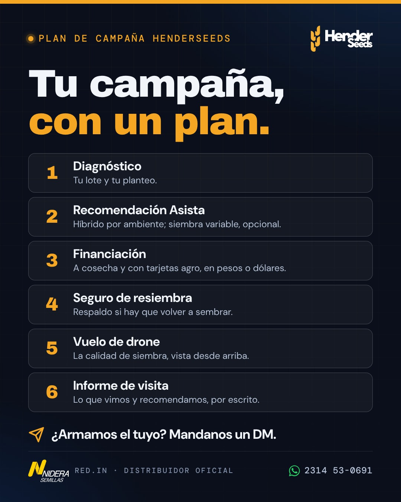
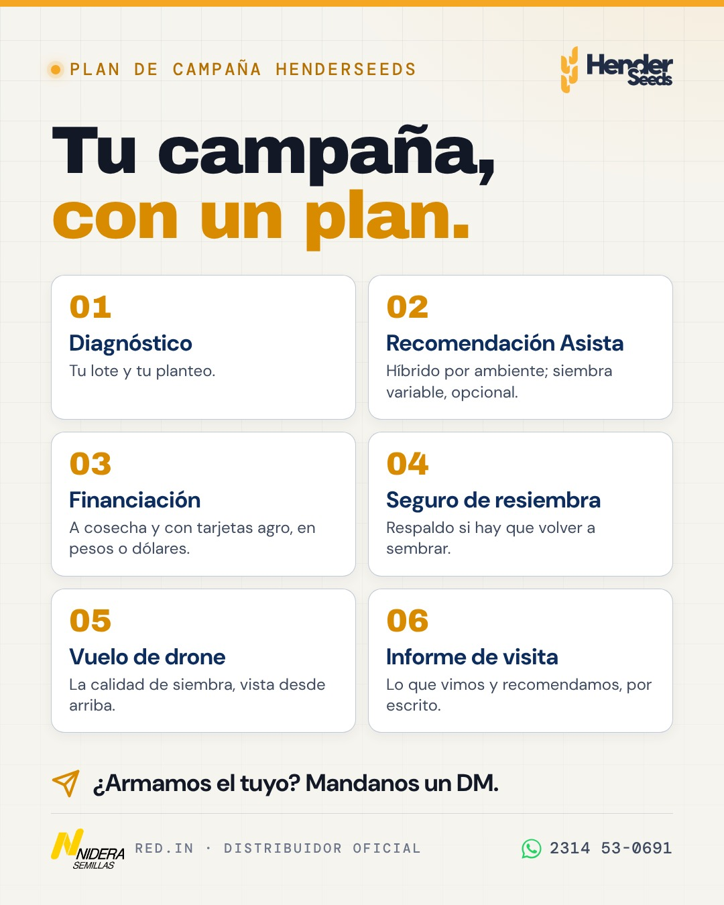
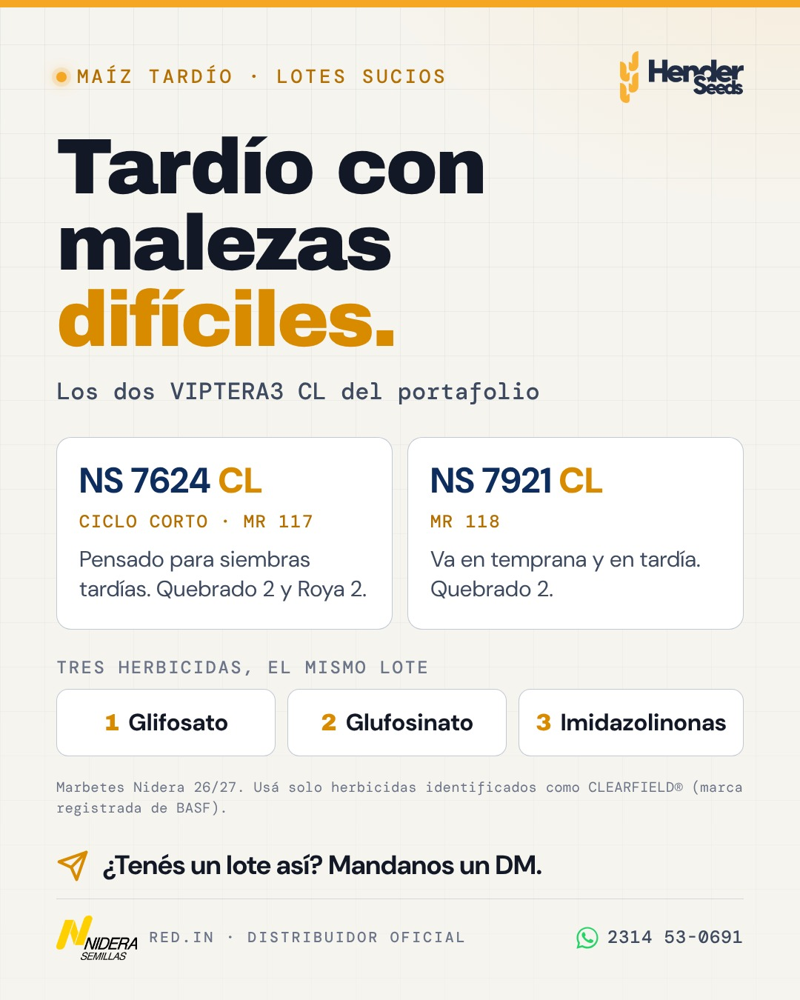
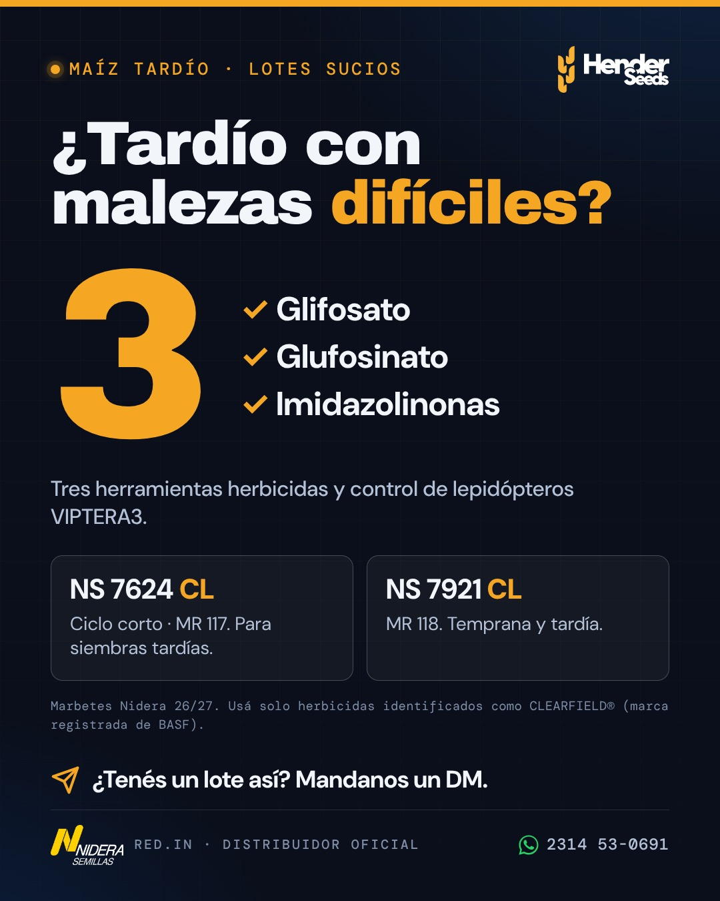

Cuatro opciones de cada placa. Tocá Descargar JPG desde el celular y subila tal cual a Instagram y Facebook (formato 4:5, 1080×1350). La marcada en amarillo es la que conviene publicar y promocionar. Antes de subir, Santi la revisa con la checklist del plan.


Tu campaña, con un plan. 📋 Así trabajamos cada campaña con los productores de Henderson, Daireaux y Bolívar: 1. Diagnóstico de tu lote y tu planteo. 2. Recomendación Asista: híbrido Nidera por ambiente y, si querés, siembra variable. 3. Financiación a cosecha y tarjetas agro, en pesos o en dólares. 4. Seguro de resiembra. 5. Vuelo de drone para ver la calidad de siembra. 6. Informe de visita: lo que vimos y lo que recomendamos, por escrito. Es el Plan de Campaña HenderSeeds. 📩 ¿Armamos el tuyo? Mandanos un DM. #Henderseeds #PlanDeCampaña #Nidera #REDIN #Henderson #Daireaux #Bolivar #Agro


¿Tu lote tardío viene con malezas complicadas? 🌽 Los dos VIPTERA3 CL del portafolio Nidera traen control de lepidópteros y tres herramientas herbicidas: glifosato, glufosinato e imidazolinonas. → NS 7624 VIPTERA3 CL: ciclo corto (MR 117), pensado para siembras tardías. → NS 7921 VIPTERA3 CL: MR 118, va en temprana y en tardía. Recordá: con Clearfield, solo herbicidas identificados como CLEARFIELD®. 📩 ¿Tenés un lote así? Mandanos un DM y lo vemos. #Henderseeds #Nidera #Maiz2627 #MaizTardio #Clearfield #Malezas #Henderson #Bolivar